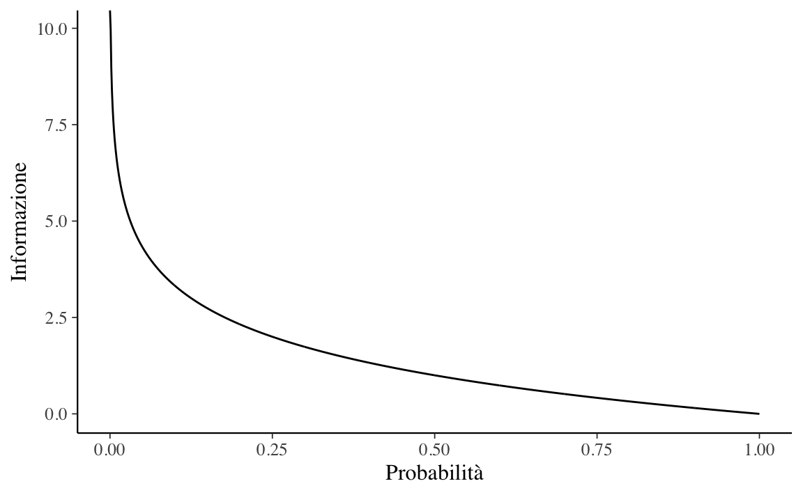

1.4 La misura del disordine
Se vogliamo ottenere una comprensione intuitiva del concetto di entropia1 possiamo pensare a quant’è informativa una distribuzione. Maggiore è l’entropia di una distribuzione, meno informativa sarà quella distribuzione e più uniformemente verranno assegnate le probabilità agli eventi. In altri termini, ottenere la risposta di “42” è più informativo della risposta “42 \(\pm\) 5”, che a sua volta è più informativo della risposta “un numero qualsiasi”. L’entropia quantifica questa osservazione qualitativa.
Il concetto di entropia si applica sia alle distribuzioni continue sia a quelle discrete, ma è più facile da capire usando le distribuzioni discrete. Negli esempi successivi vedremo alcuni esempi applicati al caso discreto, ma gli stessi concetti si applicano al caso continuo.
1.4.1 Entropia di un singolo evento
Il concetto di entropia può essere usato per descrivere la quantità di informazione fornita da un evento. L’intuizione che sta alla base del concetto di entropia è che l’informazione fornita da un evento descrive la sorpresa suscitata dall’evento: gli eventi rari (a bassa probabilità) sono più sorprendenti – e quindi forniscono più informazione – degli eventi comuni (ad alta probabilità). In altre parole,
- un evento a bassa probabilità è sorprendente e fornisce molta informazione;
- un evento ad alta probabilità è poco o per niente sorprendente e fornisce poca (o nessuna) informazione.
È dunque possibile quantificare l’informazione fornita dal verificarsi di un evento usando la probabilità di quell’evento. Una tale quantità di informazione è chiamata “informazione di Shannon”, “auto-informazione” o semplicemente “informazione” e, per un evento discreto \(x\), può essere calcolata come:
\[ \text{informazione}(x) = -\log_2 p(x), \]
dove \(\log_2\) è il logaritmo in base 2 e \(p(x)\) è la probabilità dell’evento \(x\).
La scelta del logaritmo in base 2 significa che l’unità di misura dell’informazione è il bit (cifre binarie). Questo può essere interpretato dicendo che l’informazione misura il numero di bit richiesti per rappresentare un evento.2 Solitamente, si denota la quantità di informazione con \(h()\):
\[ h(x) = -\log p(x). \]
Il segno negativo garantisce che il risultato sia sempre positivo o zero. L’informazione è zero quando la probabilità dell’evento è 1.0, ovvero quando l’evento è certo (assenza di sorpresa).
Esempio 1.1 Consideriamo il lancio di una moneta equilibrata. La probabilità di testa (e croce) è 0.5. La quantità di informazione di ottenere “testa” è dunque
-log2(0.5)
#> [1] 1Per rappresentare questo evento abbiamo bisogno di 1 bit di informazione. Se la stessa moneta venisse lanciata \(n\) volte, la quantità di informazione necessaria per rappresentare questo evento (ovvero, questa sequenza di lanci) sarebbe pari a \(n\) bit. Se la moneta non è equilibrata e la probabilità di testa è 0.1, allora l’evento “testa” è più raro e richiede più di 3 bit di informazione:
-log2(0.1)
#> [1] 3.321928Consideriamo ora il lancio di un dado. Quanta informazione viene fornita, ad esempio, dall’evento “esce il numero 6”? Dato che la probabilità di ottenere un 6 nel lancio di un dado è più piccola della probabilità di ottenere “testa” nel lancio di una moneta, il risultato del lancio di un dado deve produrre una sorpresa maggiore del risultato del lancio di una moneta. Per cui, la quantità di informazione associata all’evento “è uscito 6”, dovrà essere maggiore di quella associata all’evento “testa”. Infatti, la quantità di informazione dell’evento “è uscito un 6” è più che doppia rispetto alla quantità di informazione dell’evento “testa”:
-log2(1 / 6)
#> [1] 2.584963Esempio 1.2 Nella figura successiva viene esaminata la relazione tra probabilità e informazione, per valori di probabilità nell’intervallo tra 0 e 1.
p <- seq(0, 1, length.out = 1000)
h <- -log2(p)
ggplot(tibble(p, h), aes(p, h)) +
geom_line() +
labs(
x = "Probabilità",
y = "Informazione"
)
La figura mostra che questa relazione non è lineare, è infatti leggermente sublineare. Questo ha senso dato che abbiamo usato una funzione logaritmica.
1.4.2 Entropia di una variabile casuale
Possiamo estendere questa discussione pensando ad un insieme di eventi, ovvero ad una distribuzione. Nella teoria della probabilità usiamo la nozione di variabile casuale per fare riferimento ad un insieme di eventi e alle probabilità associate a tali eventi. L’entropia quantifica l’informazione che viene fornita da una variabile casuale.
Definizione 1.1 Sia \(Y = y_1, \dots, y_n\) una variabile casuale e \(p_t(y)\) una distribuzione di probabilità su \(Y\). Si definisce la sua entropia (detta di Shannon) come:
\[\begin{equation} H(Y) = - \sum_{i=1}^n p_t(y_i) \cdot \log_2 p_t(y_i). \tag{1.1} \end{equation}\]
Per interpretare la (1.1), consideriamo un esempio discusso da Martin, Kumar, and Lao (2022).
FIGURA 1.1: Funzioni di massa di probabilità e associata entropia.
Nella figura 1.1 sono rappresentate sei distribuzioni. viene anche riportato il valore di entropia di ciascuna distribuzione. La distribuzione con il picco più pronunciato o con la dispersione minore è q, e questa è la distribuzione con il valore di entropia più basso tra le sei distribuzioni considerate. Per q la distribuzione è q ~ binom(n = 10, p = 0.75); quindi ci sono 11 possibili eventi. qu ha una distribuzione uniforme sugli stessi 11 possibili eventi. L’entropia di qu è maggiore dell’entropia di q. Infatti, se calcoliamo l’entropia di distribuzioni binomiali con \(n = 10\) (con valori diversi di \(p\)) ci rendiamo conto che nessuna di tali distribuzioni ha un’entropia maggiore di qu. Dobbiamo aumentare \(n ≈ 3\) volte per trovare la prima distribuzione binomiale con entropia maggiore di qu. Passiamo alla riga successiva. Generiamo la distribuzione r spostando a destra q e normalizzando (per garantire che la somma di tutte le probabilità sia 1). Poiché r ha una dispersione maggiore di q, la sua entropia è maggiore. ru è una distribuzione uniforme con lo stesso numero di eventi possibili come r (ovvero 22) – si noti che sono stati inclusi come valori possibili anche quelli nella “valle” tra i due picchi. Ancora una volta, la distribuzione uniforme ha l’entropia più grande.
Gli esempi discussi finora sembrano suggerire che l’entropia è proporzionale alla varianza della distribuzione. Verifichiamo questa intuizione esaminiamo le ultime due distribuzioni della figura 1.1. La distribuzione s è simile a r ma presenta una separazione maggiore tra i due picchi della distribuzione – dunque, ha una varianza più grande. Ciò nonostante, l’entropia non varia. Quindi la relazione tra entropia e varianza non è così semplice come ci sembrava. Il risultato che abbiamo trovato può essere spiegato dicendo che, nel calcolo dell’entropia, non vengono considerati gli eventi con probabilità nulla (per questa ragione, nell’esempio, è stato possibile aumentare la varianza senza cambiare l’entropia). La distribuzione su è stata costruita sostituendo i due picchi in s con qu (e normalizzando). Possiamo vedere che su ha un’entropia minore di ru, anche se su ha una dispersione maggiore di ru. Questo è dovuto al fatto che su distribuisce la probabilità totale tra un numero minore di eventi (22) di ru (che ne conta 23); quindi è sensato attribuire a su un’entropia minore di ru.
Esempio 1.3 Consideriamo ora un esempio riguardante le previsioni del tempo. Supponiamo che le probabilità di pioggia e sole siano, rispettivamente, \(p_1 = 0.3\) e \(p_2 = 0.7\). Quindi
\[ H(p) = − [p(y_1) \log_2 p(y_1) + p(y_2) \log_2 p(y_2)] \approx 0.61. \]
Se però viviamo a Las Vegas, allora le probabilità di pioggia e sole saranno simili a \(p(y_1) = 0.01\) e \(p(y_2) = 0.99\). In questo secondo caso, l’entropia è 0.06, ovvero, molto minore di prima. Infatti, a Las Vegas non piove quasi mai, per cui quando abbiamo imparato che, in un certo giorno, non ha piovuto, abbiamo imparato molto poco rispetto a quello che già sapevamo in precedenza.
Esempio 1.4 Nell’esempio precedente abbiamo visto che, se gli esiti possibili sono pioggia o sole con \(p(y_1) = 0.7\), \(p(y_2) = 0.3\), allora l’entropia è
-(0.7 * log(0.7) + 0.3 * log(0.3))
#> [1] 0.6108643Ma se gli esiti possibili sono pioggia, neve o sole con \(p(y_1) = 0.7\), \(p(y_2) = 0.15\) e \(p(y_3) = 0.15\), rispettivamente, allora l’entropia cresce:
-(0.7 * log(0.7) + 0.15 * log(0.15) + 0.15 * log(0.15))
#> [1] 0.8188085References
La nozione di entropia fu introdotta agli inizi del XIX secolo nel campo della termodinamica classica; il secondo principio della termodinamica è infatti basato sul concetto di entropia che, in generale, è assunto come una misura del disordine di un sistema fisico. Successivamente Boltzmann fornì una definizione statistica di entropia. Nel 1948 Shannon impiegò la nozione di entropia nell’ambito della teoria delle comunicazioni.↩︎
È possibile pensare all’entropia nei termini del numero di domande sì/no che devono essere poste per ridurre l’incertezza. Per esempio, se in un certo giorno ci può essere solo sole o pioggia, per ridurre l’incertezza, a fine giornata chiediamo: “ha piovuto?” La risposta (sì/no) ad una singola domanda elimina l’incertezza, e quindi l’informazione ottenuta (ovvero, la riduzione dell’incertezza) è uguale ad 1 bit. Se in una certa giornata ci potrebbero essere sole, pioggia o neve, per ridurre l’incertezza sono necessarie due domande: “c’era sole?”; “ha piovuto?” In questo secondo caso, l’informazione ottenuta (ovvero, la riduzione dell’incertezza) è uguale ad 2 bit. Usando un logaritmo in base 2, dunque, l’entropia può essere interpretata come il numero minimo di bit necessari per codificare la quantità di informazione nei dati.↩︎